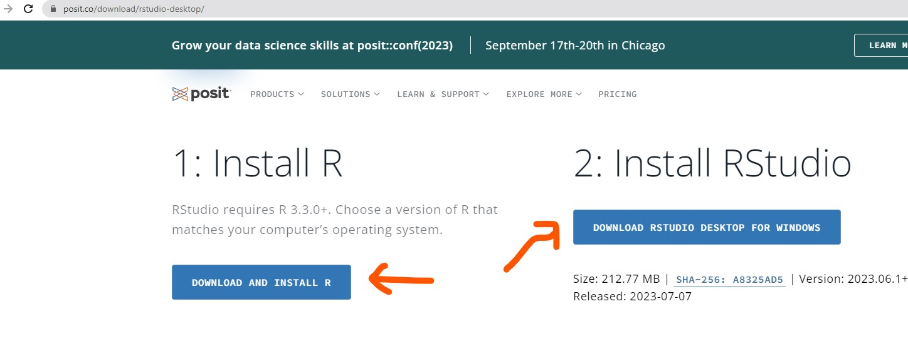
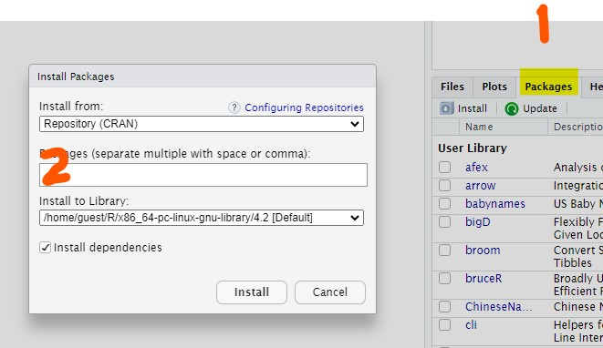
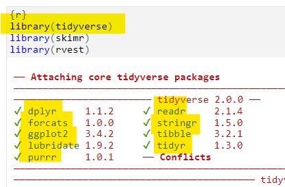

Data and code
Download R & RStudio
Remember. R and RStudio are not the same thing. It’s a good idea to have up-to-date installations. As of this writing, the easiest way to find both applications for local download are from the post.co page

Install R and RStudio
Follow this link for a nice interactive tutorial on installing R and RStudio
Quarto installation
Quarto comes pre-installed with the latest versions of RStudio. However, if you want to install Quarto again, or for use with VSCode, just to to Quarto.org
Install packages
Packages can be installed with the install.packages() function. Alternatively, from within RStudio > Packages > install

You only have to install a package once and should avoid putting the install.packages() function in your scripts. Of course, you will need to update packages from time to time.
Load packages
You should load packages at the top of your script. Then write your script. Then Run All
{kind=link}
{kind=link}
Loading the tidyverse

Tidyverse (Wickham et al. 2019) is a concept but also a package. More accurately it’s a meta-package that loads about eight other packages. When you type load(tidyverse), there’s no need to also load ggplot2, dplyr, lubridate or any of the packages that tidyverse loads. Redundantly, it’s fine to write multiple load statements, but check the feedback from the code-chunk and you’ll see what is being loaded by load(tidyverse).